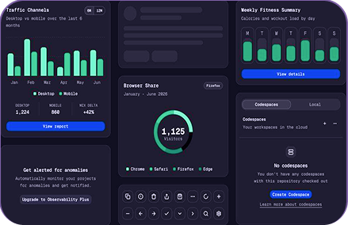
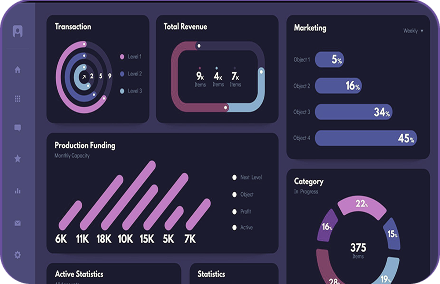
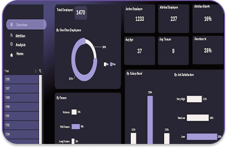

A Aurora cruza dados de performance, cultura e engajamento para gerar insights que ajudam líderes a decidir melhor, com foco em resultado e impacto.

A Aurora consolida dados de performance, cultura e engajamento em uma única solução, em tempo real.

A Aurora mostra o caminho com insights e ações que podem ser aplicadas rapidamente.

A Aurora torna esse impacto visível antes que ele aconteça para que você possa decidir e agir.
Reúna indicadores de diferentes áreas em uma única visão estratégica.
Identifique padrões, riscos e oportunidades com mais rapidez.
Transforme dados de pessoas em ações estratégicas para sua empresa.